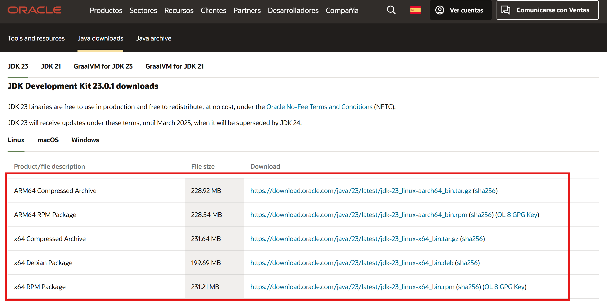
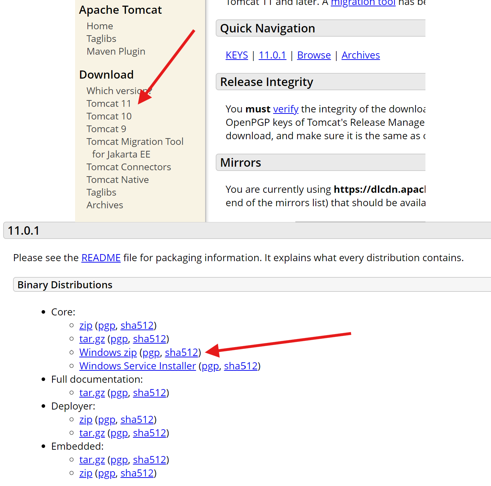
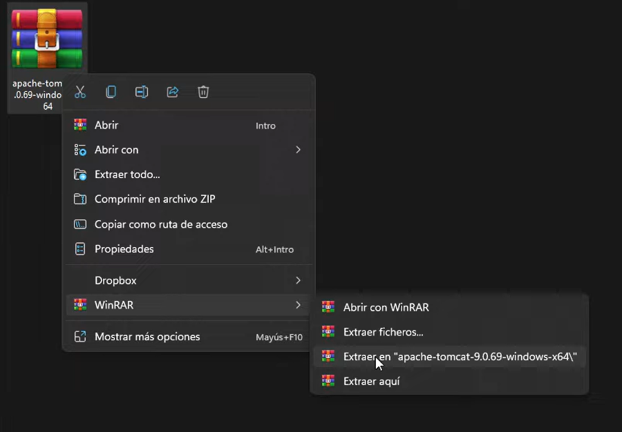
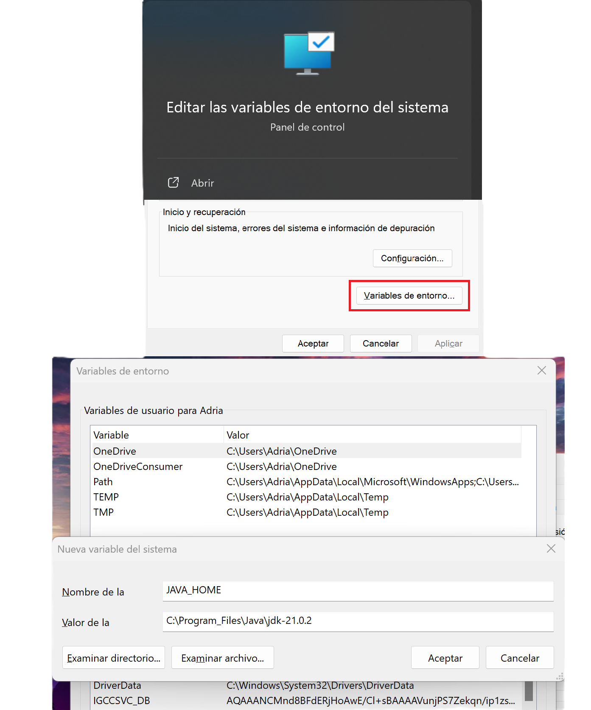
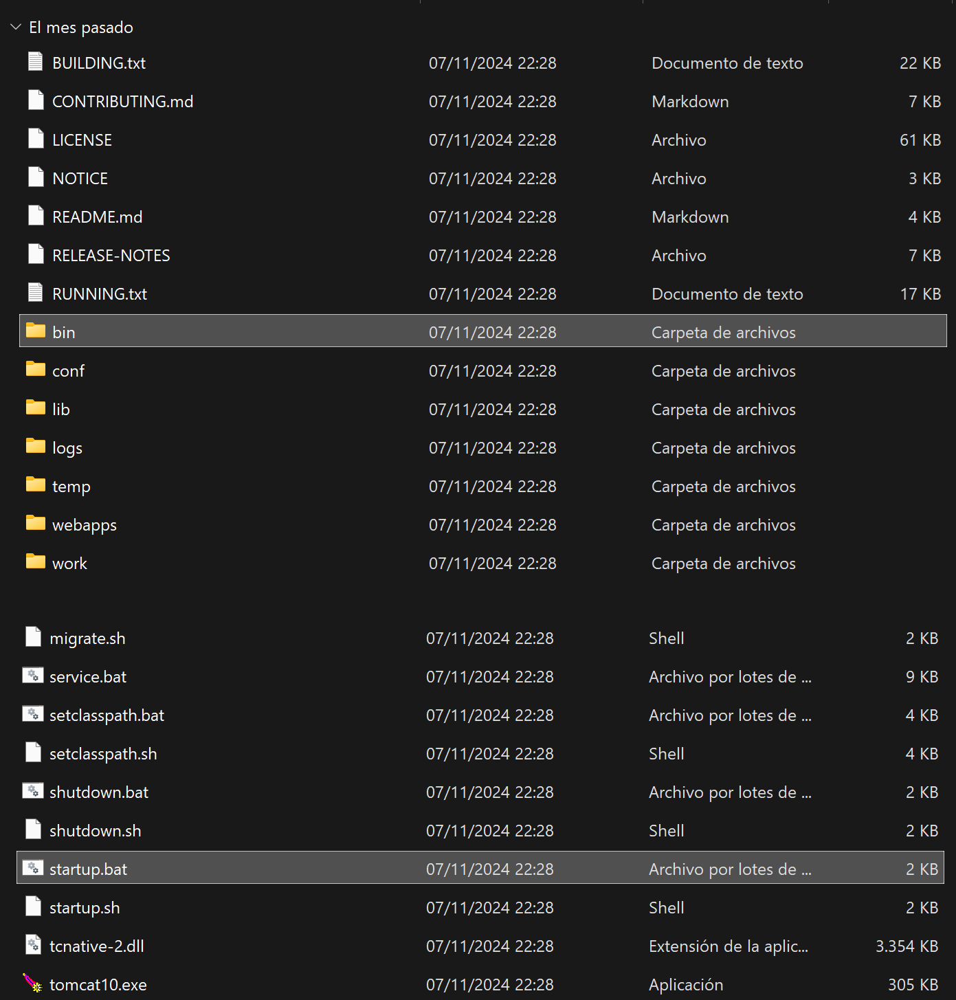
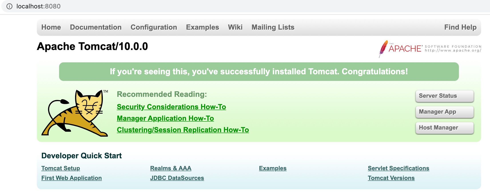

Instalación de Apache Tomcat en Windows
Requisitos Previos
1. Instalar Java Development Kit (JDK)
Antes de instalar Apache Tomcat, asegúrate de tener instalado el JDK en tu sistema. Puedes verificarlo abriendo una terminal y ejecutando:
java -version
Si no lo tienes instalado, descárgalo desde la página oficial de Oracle.
Selecciona la descarga que concuerde con tu sistema operativo y la arquitectura de tu procesador.

Proceso de Instalación
2. Descargar Apache Tomcat
Visita la página oficial de Apache Tomcat y descarga la última versión estable:
- Selecciona la versión 10.x (o la última versión estable).
- Descarga el archivo comprimido ZIP bajo la sección "Core".

3. Extraer el Archivo ZIP
Después de descargar el archivo ZIP:
- Haz clic derecho sobre el archivo y selecciona "Extraer todo".
- Selecciona una ubicación para extraer el contenido (por ejemplo, `C:\Apache\Tomcat`).
- Espera a que finalice la extracción.

4. Configuración Inicial
Antes de iniciar Apache Tomcat, asegúrate de realizar estas configuraciones:
- Configura las variables de entorno necesarias:
- JAVA_HOME: Apunta al directorio de instalación del JDK.
- CATALINA_HOME: Apunta al directorio donde se extrajo Tomcat.
- Guarda los cambios y reinicia el sistema si es necesario.

5. Iniciar Apache Tomcat
Para iniciar el servidor:
- Navega al directorio donde se extrajo Tomcat.
- Abre la carpeta `bin`.
- Haz doble clic en `startup.bat` para iniciar el servidor.
Esto abrirá una ventana de terminal indicando que Tomcat se está ejecutando.

6. Verificar la Instalación
Abre un navegador y accede a http://localhost:8080. Deberías ver la página de inicio de Apache Tomcat.
